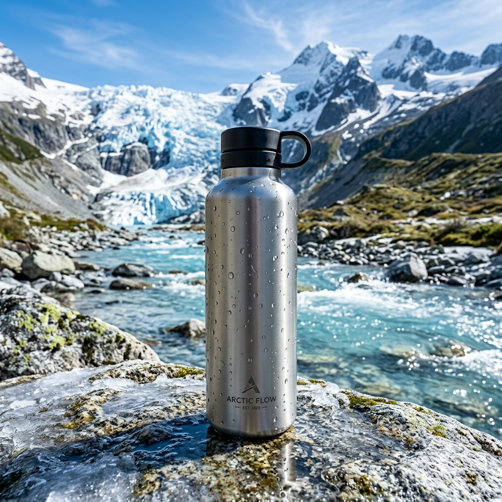

Projetada para engenheiros de si mesmos, a GLACIER traz o frescor primitivo das montanhas mais isoladas do planeta direto para sua rotina, mantendo a temperatura impecavelmente gelada.

Nossa água não é apenas filtrada, ela nasce em um santuário intocado pelo tempo. Clique nos cards abaixo para explorar a localização da fonte.
Nascida do degelo natural em altitudes elevadas, longe da civilização.
Filtragem natural lenta através de basalto que confere minerais únicos.
Coleta consciente respeitando a vazão natural e o ecossistema local.
Nossa água é extraída a mais de 3.200 metros de altitude, onde o ar é rarefeito e a pureza é intocada por poluentes urbanos. A altitude garante uma barreira natural contra qualquer interferência externa.
Construída com isolamento a vácuo triplo, protegendo a temperatura ideal não importa o ambiente.
Totalmente livre de BPA, mantendo o sabor original e puro da água, sem gosto metálico.
Três camadas de isolamento térmico a vácuo com barreira de cobre reflexiva.
Textura fosca jateada para segurar com firmeza mesmo com luvas ou mãos úmidas.